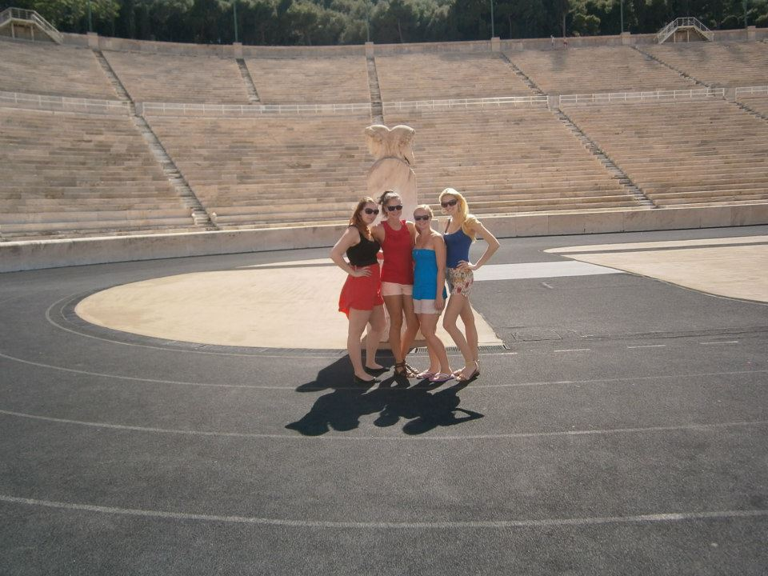
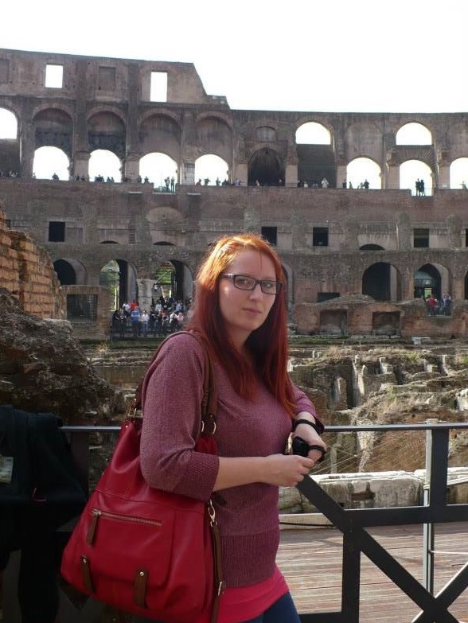
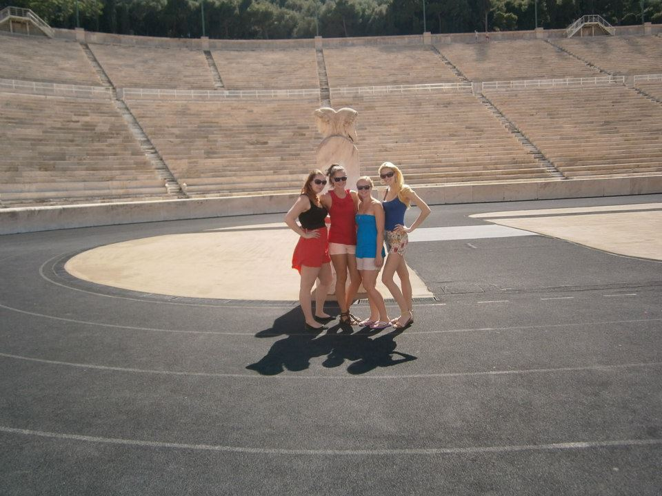
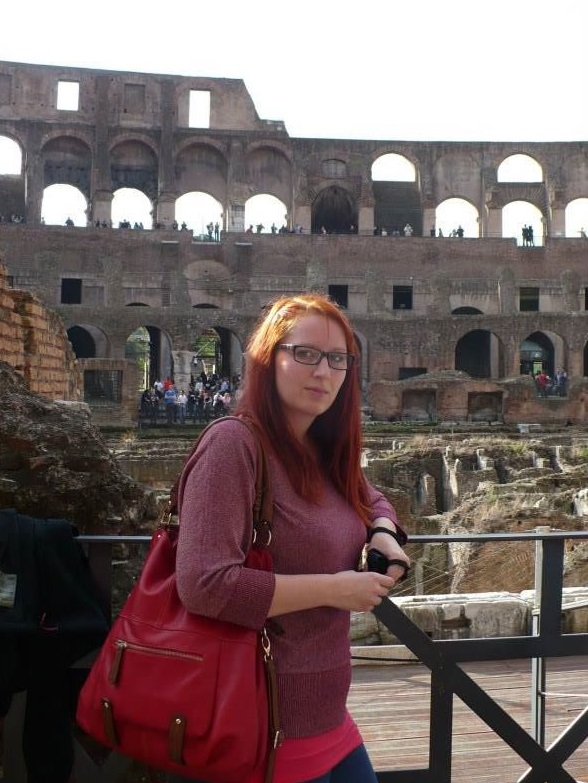

O mně

Jmenuji se Petra a jsem věčný optimista, milovník přírody, zvířat a všeho živého i neživého. Mám tvořivého ducha,
takže ráda maluju, pletu, háčkuju, tvořím macramé nebo vypaluju obrázky do dřeva.
Miluju přírodu, louky, lesy, chození na houby, klid a vodu. Pokud mě nenajdete ve stínu smrků na chatě,
najdete mě v rybníku :) Ráda se vzdělávám a čtu a ráda se věnuju osobnímu rozvoji.
Ráda přemýšlím o tom, co je mezi nebem a zemí. Chodím ráda na procházky,
sbírám kešky, jezdím na výlety a mám ráda in-line bruslení (i když mě to moc nejde).
Vzdělání
2012 – 2015
Vysoká škola polytechnická Jihlava
Obor: cestovní ruch, ukončeno státní zkouškou
2008 – 2012
OA a SOŠ cestovního ruchu Choceň
Obor: cestovní ruch, ukončeno maturitní zkouškou
Pracovní zkušenosti
01/2018 – současnost
CK Redok Travel s.r.o., Svitavy
Pozice: Produktový specialista, prodejce zájezdů, správce webu a sociálních sítí
Náplň práce: Tvorba vč. cenotvorby a propagace produktů, tvorba propagačních materiálů,
správa webových stránek a Facebooku, prodej a odbavení zájezdů, komunikace s klienty a obchodními partnery,
příprava obchodní dokumentace, tvorba katalogu
11/2015 – 08/2017
CK Eximtours, a.s., Kolín
Pozice: Referent CK / Vedoucí CK
Náplň práce: Prodej zájezdů a letenek, komunikace s klienty, práce s rezervačním systémem, administrativa,
tvorba nabídek, dohled nad chodem pobočky
04/2015 – 08/2015
Veselá společnost, Chrudim
Pozice: Animátorka a oddílová vedoucí dětského tábora
Náplň práce: Organizace volnočasových aktivit
02/2015 – 05/2015
Vysočina Tourism, p. o., Jihlava
Pozice: Asistentka
Náplň práce: zpracování statistických dat a databází, správa webového portálu,
příprava podkladů pro projekty, administrativa
Ostatní kurzy a dovednosti
Státní zkouška z kancelářského psaní na počítači a obchodní korespondence
Práce s PC - MS Office - Excel, Word, PowerPoint, Outlook, Magicware
Řidičský průkaz sk. B
Jazykové znalosti:
- anglický jazyk – pokročilý
- ruský jazyk – začátečník
- německý jazyk – začátečník
Absolvované kurzy s Czechitas:
- Poznej svět IT - Přehled pojmů
- Úvod do bezpečnosti
- Úvod do HTML a CSS
- Úvod do testování - manuální
- Úvod do UX
- Staň se kodérkou - právě probíhá :)
Zájmy
- Osobní rozvoj
- Četba
- Malování
- Pečení
- Dokumentární filmy
- Geocaching
- Pyrografie
- Pletení, háčkování, macramé
- Vzdělávání
- Sport
- Cestování a výlety
Fotografie z výletů a cest
 



 Mobil: 732 570 809
Mobil: 732 570 809 E-mail:
E-mail:  Adresa: Jiráskova 940, 560 02 Česká Třebová
Adresa: Jiráskova 940, 560 02 Česká Třebová